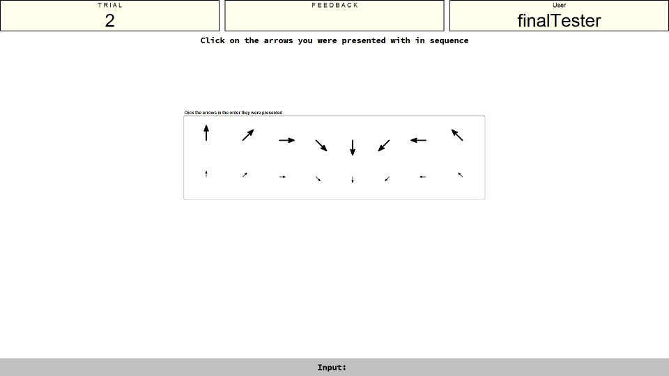
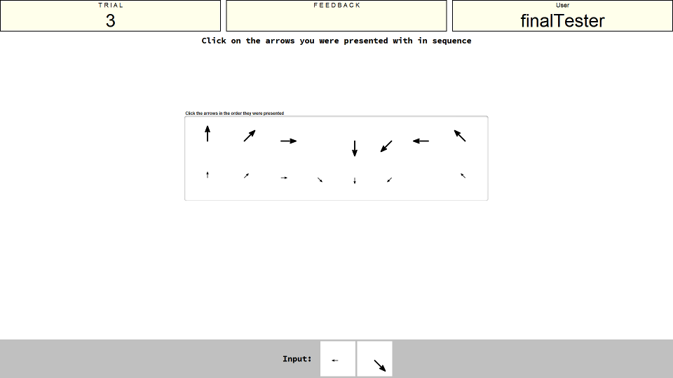

Instructions
Presentation Phase
This is the arrow span task. You will be shown a series of arrows that differ in their size (either short or long) and in the degree to which they are rotated (at every possible 45 degree rotation). For example, in the first image below the arrow you must remember is a long arrow pointing downwards (at 180 degrees).
Recall Phase
After you have been given all the arrows to remember you will be shown the recall screen. The images below show you what this looks like. The long arrows are on the top row, and the short arrows are on the bottom. Simply click them in the order you saw them, as you click them they will disappear to indicate that you have already selected them.


Please ask if you are unsure of what this task is about.